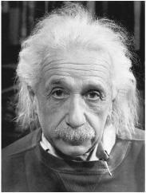

Portrait by Philippe Halsman, 1947
For a few weeks after the dropping of the atom bomb, Einstein was uncharacteristically reticent. He fended off reporters who were knocking at his door in Saranac Lake, and he even declined to give a quote to his summer neighbor Arthur Hays Sulzberger, publisher of the New York Times, when he called.1
It was only as he was about to leave his summer rental in mid-September, more than a month after the bombs had been dropped, that Einstein agreed to discuss the issue with a wire service reporter who came calling. The point he stressed was that the bomb reinforced his longtime support for world federalism. “The only salvation for civilization and the human race lies in the creation of world government,” he said. “As long as sovereign states continue to have armaments and armaments secrets, new world wars will be inevitable.”2
As in science, so it was in world politics for Einstein: he sought a unified set of principles that could create order out of anarchy. A system based on sovereign nations with their own military forces, competing ideologies, and conflicting national interests would inevitably produce more wars. So he regarded a world authority as realistic rather than idealistic, as practical rather than naïve.
He had been circumspect during the war years. He was a refugee in a nation that was using its military might for noble rather than nationalistic goals. But the end of the war changed things. So did the dropping of the atom bombs. The increase in the destructive power of offensive weaponry led to a commensurate increase in the need to find a world structure for security. It was time for him to become politically outspoken again.
For the remaining ten years of his life, his passion for advocating a unified governing structure for the globe would rival that for finding a unified field theory that could govern all the forces of nature. Although distinct in most ways, both quests reflected his instincts for transcendent order. In addition, both would display Einstein’s willingness to be a nonconformist, to be serenely secure in challenging prevailing attitudes.
The month after the bombs were dropped, a group of scientists signed a statement urging that a council of nations be created to control atomic weaponry. Einstein responded with a letter to J. Robert Oppenheimer, who had so successfully led the scientific efforts at Los Alamos. He was pleased with the sentiments behind the statement, Einstein said, but he criticized the political recommendations as “obviously inadequate” because they retained sovereign nations as the ultimate powers. “It is unthinkable that we can have peace without a real governmental organization to create and enforce law on individuals in their international relations.”
Oppenheimer politely pointed out that “the statements you attributed to me are not mine.” They had been written by another group of scientists. He did, nevertheless, challenge Einstein’s argument for a full-fledged world government: “The history of this nation up through the Civil War shows how difficult the establishment of a federal authority can be when there are profound differences in the values of the societies it attempts to integrate.”3 Oppenheimer thus became the first of many postwar realists to disparage Einstein for being allegedly too idealistic. Of course, one could flip his argument by noting that the Civil War showed in gruesome terms the danger of not having a secure federal authority instead of state military sovereignty when there are differences of values among member states.
What Einstein envisioned was a world “government” or “authority” that had a monopoly on military power. He called it a “supranational” entity, rather than an “international” one, because it would exist above its member nations rather than as a mediator among sovereign nations.4 The United Nations, which was founded in October 1945, did not come close to meeting these criteria, Einstein felt.
Over the next few months, Einstein fleshed out his proposals in a series of essays and interviews. The most important arose from an exchange of fan letters he had with Raymond Gram Swing, a commentator on ABC radio. Einstein invited Swing to visit him in Princeton, and the result was an article by Einstein, as told to Swing, in the November 1945 issue of the Atlantic called “Atomic War or Peace.”5
The three great powers—the United States, Britain, and Russia—should jointly establish the new world government, Einstein said in the article, and then invite other nations to join. Using a somewhat misleading phrase that was part of the popular debate of the time, he said that “the secret of the bomb” should be given to this new organization by Washington.6 The only truly effective way to control atomic arms, he believed, was by ceding the monopoly on military power to a world government.
By then, in late 1945, the cold war was under way. America and Britain had begun to clash with Russia for imposing communist regimes in Poland and other eastern European areas occupied by the Red Army. For its part, Russia zealously sought a security perimeter and was neuralgic about any perceived attempt to interfere in its domestic affairs, which made its leaders resist surrendering any sovereignty to a world authority.
So Einstein sought to make it clear that the world government he envisioned would not try to impose a Western-style liberal democracy everywhere. He advocated a world legislature that would be elected directly by the people of each member country, in secret ballot, rather than appointed by the nation’s rulers. However, “it should not be necessary to change the internal structure of the three great powers,” he added as a reassurance to Russia. “Membership in a supranational security system should not be based on any arbitrary democratic standards.”
One issue that Einstein could not resolve neatly was what right this world government would have to intervene in the internal affairs of nations. It must be able “to interfere in countries where a minority is oppressing a majority,” he said, citing Spain as an example. Yet that caused him contortions about whether this standard applied to Russia. “One must bear in mind that the people in Russia have not had a long tradition of political education,” he rationalized. “Changes to improve conditions in Russia had to be effected by a minority because there was no majority capable of doing so.”
Einstein’s efforts to prevent future wars were motivated not only by his old pacifist instincts but also, he admitted, by his guilty feelings about the role he had played in encouraging the atom bomb project. At a Manhattan dinner given by the Nobel Prize committee in December, he noted that Alfred Nobel, the inventor of dynamite, had created the award “to atone for having invented the most powerful explosives ever known up to his time.” He was in a similar situation. “Today, the physicists who participated in forging the most formidable and dangerous weapon of all times are harassed by an equal feeling of responsibility, not to say guilt,” he said.7
These sentiments prompted Einstein, in May 1946, to take on the most prominent public policy role in his career. He became chairman of the newly formed Emergency Committee of Atomic Scientists, which was dedicated to nuclear arms control and world government. “The unleashed power of the atom has changed everything save our modes of thinking,” Einstein wrote in a fund-raising telegram that month, “and thus we drift towards unparalleled catastrophe.”8
Leó Szilárd served as the executive director and did most of the organizational work. But Einstein, who served until the end of 1948, gave speeches, chaired meetings, and took his role seriously. “Our generation has brought into the world the most revolutionary force since prehistoric man’s discovery of fire,” he said. “This basic power of the universe cannot be fitted into the outmoded concept of narrow nationalisms.”9
The Truman administration proposed a variety of plans for the international control of atomic power, but none were able, intentionally or not, to win the support of Moscow. As a result, the battle over the best approach quickly created a political divide.
On one side were those who celebrated the success of America and Britain in winning the race to develop such weapons. They saw the bomb as a guarantor of the freedoms of the West, and they wanted to guard what they saw as “the secret.” On the other side were arms control advocates like Einstein. “The secret of the atomic bomb is to America what the Maginot Line was to France before 1939,” he told Newsweek. “It gives us imaginary security, and in this respect it is a great danger.”10
Einstein and his friends realized that the battle for public sentiment needed to be fought not only in Washington but also in the realm of popular culture. This led to an amusing—and historically illustrative—tangle in 1946 pitting them against Louis B. Mayer and a coterie of earnest Hollywood moviemakers.
It began when a Metro-Goldwyn-Mayer scriptwriter named Sam Marx asked if he could come to Princeton to get Einstein’s cooperation on a docudrama about the making of the bomb. Einstein sent back word that he had no desire to help. A few weeks later Einstein got an anxious letter from an official with the Association of Manhattan Project Scientists saying that the movie seemed to be taking a very pro-military slant, celebrating the creation of the bomb and the security it gave to America. “I know that you will not want to lend your name to a picture which misrepresents the military and political implications of the bomb,” the letter said. “I hope that you will see fit to make the use of your name conditional on your personal approval of the script.”11
The following week Szilárd came to see Einstein about the issue, and soon a bevy of peace-loving physicists was bombarding him with concerns. So Einstein read the script and agreed to join the campaign to stop the movie. “The presentation of facts was so utterly misleading that I declined any cooperation or permission of the use of my name,” he said.
He also sent a spiky letter to the famed mogul that attacked the proposed movie and also, for good measure, the tone of previous ones that Mayer had made. “Although I am not much of a moviegoer, I do know from the tenor of earlier films that have come out of your studio that you will understand my reasons,” he wrote. “I find that the whole film is written too much from the point of view of the Army and the Army leader of the project, whose influence was not always in the direction which one would desire from the point of view of humanity.”12
Mayer turned Einstein’s letter over to the film’s chief editor, who responded with a memo that Mayer sent back to Einstein. President Truman, it said, “was most anxious to have the picture made” and had personally read and approved the script, an argument not likely to reassure Einstein. “As American citizens we are bound to respect the viewpoint of our government.” That, too, was not the best argument to use on Einstein. There followed an even less persuasive argument: “It must be realized that dramatic truth is just as compelling a requirement to us as veritable truth is to a scientist.”
The memo concluded by promising that the moral issues raised by the scientists would be given a proper airing through the character of a fictional young scientist played by an actor named Tom Drake. “We selected among our young male players the one who best typifies earnestness and a spiritual quality,” it said reassuringly. “You need only recall his performance in ‘The Green Years.’ ”13
Not surprisingly, this did not turn Einstein around. When Sam Marx, the scriptwriter, wrote beseeching him to change his mind and allow himself to be portrayed, Einstein replied curtly: “I have explained my point of view in a letter to Mr. Louis Mayer.” Marx was persistent. “When the picture is complete,” he wrote back, “the audience will feel in greatest sympathy with the young scientist.” And from later the same day: “Here is a new and revised script.”14
The ending was not that hard to predict. The new script was more pleasing to the scientists, and they were not immune to the lure of being glorified on the big screen. Szilárd sent Einstein a telegram saying, “Have received new script from MGM and am writing that I have no objection to use of my name in it.” Einstein relented. “Agree with use of my name on basis of the new script,” he scribbled in English on the back of the telegram. The only change he requested was in the scene of Szilárd’s 1939 visit to him on Long Island. The script said that he had not met Roosevelt before then, but he had.15
The Beginning or the End, which was the name of the movie, opened to good reviews in February 1947. “A sober, intelligent account of the development and deployment of the Atom Bomb,” Bosley Crowther declared in the New York Times, “refreshingly free of propagandizing.” Einstein was played by a character actor named Ludwig Stossel, who had a small part in Casablanca as a German Jew trying to get to America and would later have a flicker of fame in Swiss Colony wine commercials in the 1960s in which he spoke the tagline “That little old winemaker, me.”16
Einstein’s efforts on behalf of arms control and his advocacy of world government in the late 1940s got him tagged as woolly-headed and naïve. Woolly-headed he may have been, at least in appearance, but was it right to dismiss him as naïve?
Most Truman administration officials, even those working on behalf of arms control, thought so. William Golden was an example. An Atomic Energy Commission staffer who was preparing a report for Secretary of State George Marshall, he went to Princeton to consult with Einstein. Washington needed to try harder to enlist Moscow in an arms control plan, Einstein argued. Golden felt he was speaking “with almost childlike hope for salvation and without appearing to have thought through the details of his solution.” He reported back to Marshall, “It was surprising, though perhaps it should not have been, that, out of his métier of mathematics, he seemed naïve in the field of international politics. The man who popularized the concept of a fourth dimension could think in only two of them in considerations of World Government.”17
To the extent that Einstein was naïve, it was not because he had a benign view of human nature. Having lived in Germany in the first half of the twentieth century, there was little chance of that. When the famed photographer Philippe Halsman, who had escaped the Nazis with Einstein’s help, asked whether he thought there would ever be lasting peace, Einstein answered, “No, as long as there will be man, there will be war.” At that moment Halsman clicked his shutter and captured Einstein’s sadly knowing eyes for what became a famous portrait (reproduced on page 487).18
Einstein’s advocacy of an empowered world authority was based not on gooey sentiments but on this hardnosed assessment of human nature. “If the idea of world government is not realistic,” he said in 1948, “then there is only one realistic view of our future: wholesale destruction of man by man.”19
Like some of his scientific breakthroughs, Einstein’s approach involved abandoning entrenched suppositions that others considered verities. National sovereignty and military autonomy had been an underpinning of the world order for centuries, just as absolute time and absolute space had been the underpinning of the cosmic order. To advocate transcending that approach was a radical idea, the product of a nonconformist thinker. But like many of Einstein’s ideas that at first seemed so radical, it may have looked less so had it come to be accepted.
The world federalism that Einstein—and indeed many sober and established political leaders—advocated during the early years of America’s atomic monopoly was not unthinkable. To the extent that he was naïve, it was because he put forth his idea in a simple fashion and did not consider complex compromises. Physicists are not used to trimming or compromising their equations in order to get them accepted. Which is why they do not make good politicians.
At the end of the 1940s, when it was becoming clear to him that the effort to control nuclear weaponry would fail, Einstein was asked what the next war would look like.“I do not know how the Third World War will be fought,” he answered, “but I can tell you what they will use in the Fourth—rocks.”20
Those who wanted international control of the bomb had one big issue to confront: how to deal with Russia. A growing number of Americans, along with their elected leaders, came to view Moscow’s communists as dangerously expansionist and deceitful. The Russians, for their part, did not seem all that eager for arms control or world governance either. They had deeply ingrained fears about their security, a desire for a bomb of their own, and leaders who recoiled at any hint of outside meddling in their nation’s internal affairs.
There was a typical nonconformity in Einstein’s attitudes toward Russia. He did not swing as far as many others did toward glorifying the Russians when they became allies during the war, nor did he swing as far toward demonizing them when the cold war began. But by the late 1940s, this put him increasingly outside mainstream American sentiments.
He disliked communist authoritarianism, but he did not see it as an imminent danger to American liberty. The greater danger, he felt, was rising hysteria about the supposed Red menace. When Norman Cousins, editor of the Saturday Review and the journalistic patron of America’s internationalist intelligentsia, wrote a piece calling for international arms control, Einstein responded with a fan letter but added a caveat. “What I object to in your article is that you not only fail to oppose the widespread hysterical fear in our country of Russian aggression but actually encourage it,” he said. “All of us should ask ourselves which of the two countries is objectively more justified in fearing the aggressive intentions of the other.”21
As for the repression inside Russia, Einstein tended to offer only mild condemnations diluted by excuses. “It is undeniable that a policy of severe coercion exists in the political sphere,” he said in one talk. “This may, in part, be due to the need to break the power of the former ruling class and to convert a politically inexperienced, culturally backward people into a nation well organized for productive work. I do not presume to pass judgment in these difficult matters.”22
Einstein consequently became the target of critics who saw him as a Soviet sympathizer. Mississippi Congressman John Rankin said that Einstein’s world government plan was “simply carrying out the Communist line.” Speaking on the House floor, Rankin also denounced Einstein’s science: “Ever since he published his book on relativity to try to convince the world that light had weight, he has capitalized on his reputation as a scientist . . . and has been engaged in communistic activities.”23
Einstein continued his long-running exchanges on Russia with Sidney Hook, the social philosopher who had once been a communist and then become strongly anticommunist. These were not as exalted as his exchanges with Bohr, on either side, but they got as intense. “I am not blind to the serious weakness of the Russian system of government,” Einstein replied to one of Hook’s missives. “But it has, on the other side, great merits and it is difficult to decide whether it would have been possible for the Russians to survive by following softer methods.”24
Hook took it upon himself to convince Einstein of the error of his ways and sent him long and rather frequent letters, most of which Einstein ignored. On the occasions he did answer, Einstein generally agreed that Russia’s oppression was wrong, but he tended to balance such judgments by adding that it was also somewhat understandable. As he juggled it in one 1950 response:
I do not approve of the interference by the Soviet government in intellectual and artistic matters. Such interference seems to me objectionable, harmful, and even ridiculous. Regarding the centralization of political power and the limitations of the freedom of action for the individual, I think that these restrictions should not exceed the limit demanded by security, stability, and the necessities resulting from a planned economy. An outsider is hardly able to judge the facts and possibilities. In any case it cannot be doubted that the achievements of the Soviet regime are considerable in the fields of education, public health, social welfare, and economics, and that the people as a whole have greatly gained by these achievements.25
Despite these qualified excuses for some of Moscow’s behavior, Einstein was not the Soviet supporter that some tried to paint him. He had always rejected invitations to Moscow and rebuffed attempts by friends on the left to embrace him as a comrade. He denounced Moscow’s repeated use of the veto at the United Nations and its resistance to the idea of world government, and he became even more critical when the Soviets made it clear that they had no appetite for arms control.
This was evident when an official group of Russian scientists attacked Einstein in a 1947 Moscow newspaper article, “Dr. Einstein’s Mistaken Notions.” His vision for a world government, they declared, was a plot by capitalists. “The proponents of a world super-state are asking us voluntarily to surrender independence for the sake of world government, which is nothing but a flamboyant signboard for the supremacy of capitalist monopolies,” they wrote. They denounced Einstein for recommending a directly elected supranational parliament. “He has gone so far as to declare that if the Soviet Union refuses to join this new-fangled organization, other countries would have every right to go ahead without it. Einstein is supporting a political fad which plays into the hands of the sworn enemies of sincere international cooperation and enduring peace.”26
Soviet sympathizers at the time were willing to follow almost any party line that Moscow dictated. Such conformity was not in Einstein’s nature. When he disagreed with someone, he merrily said so. He was happy to take on the Russian scientists.
Although he reiterated his support for democratic socialist ideals, he rebutted the Russians’ faith in communist dogma. “We should not make the mistake of blaming capitalism for all existing social and political evils, nor of assuming that the very establishment of socialism would be sufficient to cure the social and political ills of humanity,” he wrote. Such thinking led to the “fanatical intolerance” that infected the Communist Party faithful, and it opened the way to tyranny.
Despite his criticisms of untrammeled capitalism, what repelled him more—and had repelled him his entire life—was repression of free thought and individuality. “Any government is evil if it carries within it the tendency to deteriorate into tyranny,” he warned the Russian scientists. “The danger of such deterioration is more acute in a country in which the government has authority not only over the armed forces but also over every channel of education and information as well as over the existence of every single citizen.”27
Just as his dispute with the Russian scientists was breaking, Einstein was working with Raymond Gram Swing to update the article in the Atlantic that they had done two years earlier. This time Einstein attacked Russia’s rulers. Their reasons for not supporting a world government, he said, “quite obviously are pretexts.”Their real fear was that their repressive communist command system might not survive in such an environment. “The Russians may be partly right about the difficulty of retaining their present social structure in a supranational regime, though in time they may be brought to see that this is a far lesser loss than remaining isolated from a world of law.”28
The West should proceed with creating a world government without Russia, he said. They would eventually come around, he thought: “I believe that if this were done intelligently (rather than in clumsy Truman style!) Russia would cooperate once she realized that she was no longer able to prevent world government anyhow.”29
From then on, Einstein seemed to take a perverse pride in disputing those who blamed the Russians for everything, and those who blamed them for nothing. When a left-leaning pacifist he knew sent him a book he had written on arms control, expecting Einstein’s endorsement, he got instead a rebuff. “You have presented the whole problem as an advocate of the Soviet point of view,” Einstein wrote, “but you have kept silent about everything which is not favorable for the Soviets (and this is not little).”30
Even his longtime pacifism developed a hard, realistic edge when it came to dealing with Russia, just as it had after the Nazis rose to power in Germany. Pacifists liked to think that Einstein’s break with their philosophy in the 1930s was an aberration caused by the unique threat posed by the Nazis, and some biographers likewise treat it as a temporary anomaly.31 But that minimizes the shift in Einstein’s thinking. He was never again a pure pacifist.
When he was asked, for example, to join a campaign to persuade American scientists to refuse to work on atomic weapons, he not only declined but berated the organizers for advocating unilateral disarmament. “Disarmament cannot be effective unless all countries participate,” he lectured. “If even one nation continues to arm, openly or secretly, the disarmament of the others will involve disastrous consequences.”
Pacifists like himself had made a mistake in the 1920s by encouraging Germany’s neighbors not to rearm, he explained. “This merely served to encourage the arrogance of the Germans.” There were parallels now with Russia. “Similarly, your proposition would, if effective, surely lead to a serious weakening of the democracies,” he wrote those pushing the antimilitary petition. “For we must realize that we are probably not able to exert any significant influence on the attitude of our Russian colleagues.”32
He took a similar stance when his former colleagues in the War Resisters’ League asked him to rejoin in 1948. They flattered him by quoting one of his old pacifist proclamations, but Einstein rebuffed them. “That statement accurately expresses the views I held on war resistance in the period from 1918 to the early thirties,” he replied. “Now, however, I feel that policy, which involves the refusal of individuals to participate in military activities, is too primitive.”
Simplistic pacifism could be dangerous, he warned, especially given the internal policies and external attitude of Russia. “The war resistance movement actually serves to weaken the nations with a more liberal type of government and, indirectly, to support the policies of the existing tyrannical governments,” he argued. “Antimilitaristic activities, through refusal of military service, are wise only if they are feasible everywhere throughout the world. Individual antimilitarism is impossible in Russia.”33
Some pacifists argued that world socialism, rather than world government, would be the best foundation for lasting peace. Einstein disagreed. “You say that socialism by its very nature rejects the remedy of war,” Einstein replied to one such advocate. “I do not believe that. I can easily imagine that two socialist states might fight a war against each other.”34
One of the early flashpoints of the cold war was Poland, where the occupying Red Army had installed a pro-Soviet regime without the open elections that Moscow had promised. When that new Polish government invited Einstein to a conference, they got a taste of his independence from party dogma. He politely explained that he no longer traveled overseas, and he sent a careful message that offered encouragement but also stressed his call for a world government.
The Poles decided to delete the parts about world government, which Moscow opposed. Einstein was furious, and he released his un-delivered full message to the New York Times. “Mankind can gain protection against the danger of unimaginable destruction and wanton annihilation only if a supranational organization has alone the authority to produce or possess these weapons,” it said. He also complained to the British pacifist who presided over the meeting that the communists were trying to enforce conformity to a party line: “I am convinced that our colleagues on the other side of the fence are completely unable to express their real opinions.”35
He had criticized the Soviet Union, refused to visit there, and opposed the sharing of atomic secrets unless a world government could be created. He had never worked on the bomb-making project and knew no classified information about its technology. Nevertheless, Einstein was unwittingly caught up in a chain of events that showed how suspicious, intrusive, and inept the FBI could be back then when pursuing the specter of Soviet communism.
The Red Scares and investigations into communist subversion originally had some legitimate justifications, but eventually they included bumbling inquisitions that resembled witch hunts. They began in earnest at the start of 1950, after America was stunned by news that the Soviets had developed their own bomb. During the first few weeks of that year, President Truman launched a program to build a hydrogen bomb, a refugee German physicist working in Los Alamos named Klaus Fuchs was arrested as a Soviet spy, and Senator Joseph McCarthy gave his famous speech, claiming that he had a list of card-carrying communists in the State Department.
As the head of the Emergency Committee of Atomic Scientists, Einstein had dismayed Edward Teller by not supporting the building of the hydrogen bomb. But Einstein also had not opposed it outright. When A. J. Muste, a prominent pacifist and socialist activist, asked him to join an appeal to delay construction of the new weapon, Einstein declined. “Your new proposal seems quite impractical to me,” he said. “As long as competitive armament prevails, it will not be possible to halt the process in one country.”36 It was more sensible, he felt, to push for a global solution that included a world government.
The day after Einstein wrote that letter, Truman made his announcement of a full-scale effort to produce the H-bomb. From his Princeton home, Einstein taped a three-minute appearance for the premiere of a Sunday evening NBC show called Today with Mrs. Roosevelt. The former first lady had become a voice of progressivism after the death of her husband. “Each step appears as the inevitable consequence of the one that went before,” he said of the arms race. “And at the end, looming ever clearer, lies general annihilation.” The headline in the New York Post the next day was, “Einstein Warns World: Outlaw H-Bomb or Perish.”37
Einstein made another point in his televised talk. He expressed his growing concern over the U.S. government’s increased security measures and willingness to compromise the liberties of its citizens. “The loyalty of citizens, particularly civil servants, is carefully supervised by a police force growing more powerful every day,” he warned. “People of independent thought are harassed.”
As if to prove him right, J. Edgar Hoover, who hated communists and Eleanor Roosevelt with almost equal passion, the very next day called in the FBI’s chief of domestic intelligence and ordered a report on Einstein’s loyalty and possible communist connections.
The resulting fifteen-page document, produced two days later, listed thirty-four organizations, some purportedly communist fronts, that Einstein had been affiliated with or lent his name to, including the Emergency Committee of Atomic Scientists. “He is principally a pacifist and could be considered a liberal thinker,” the memo concluded somewhat benignly, and it did not charge him with being either a communist or someone who gave information to subversives.38
Indeed, there was nothing that linked Einstein to any security threat. A reading of the dossier, however, makes the FBI agents look like Keystone Kops. They bumbled around, unable to answer questions such as whether Elsa Einstein was his first wife, whether Helen Dukas was a Soviet spy while in Germany, and whether Einstein had been responsible for bringing Klaus Fuchs into the United States. (In all three cases, the correct answer was no.)
The agents also tried to pin down a tip that Elsa had told a friend in California that they had a son by the name of Albert Einstein Jr.who was being held in Russia. In fact, Hans Albert Einstein was by then an engineering professor at Berkeley. Neither he nor Eduard, still in a Swiss sanatorium, had ever been to Russia.(If there was any basis to the rumor, it was that Elsa’s daughter Margot had married a Russian, who returned there after they divorced, though the FBI never found that out.)
The FBI had been gathering rumors about Einstein ever since the 1932 screed from Mrs. Frothingham and her women patriots. Now it began systematically keeping track of that material in one growing dossier. It included such tips as one from a Berlin woman who sent him a mathematical scheme for winning the Berlin lottery and had concluded he was a communist when he did not respond to her.39 By the time he died, the Bureau would amass 1,427 pages stored in fourteen boxes, all stamped Confidential but containing nothing incriminating.40
What is most notable, in retrospect, about Einstein’s FBI file is not all the odd tips it contained, but the one relevant piece of information that was completely missing. Einstein did in fact consort with a Soviet spy, unwittingly. But the FBI remained clueless about it.
The spy was Margarita Konenkova, who lived in Greenwich Village with her husband, the Russian realist sculptor Sergei Konenkov, mentioned earlier. A former lawyer who spoke five languages and had an engaging way with men, so to speak, her job as a Russian secret agent was to try to influence American scientists. She had been introduced to Einstein by Margot, and she became a frequent visitor to Princeton during the war.
Out of duty or desire, she embarked on an affair with the widowed Einstein. One weekend during the summer of 1941, she and some friends invited him to a cottage on Long Island, and to everyone’s surprise he accepted. They packed a lunch of boiled chicken, took the train from Penn Station, and spent a pleasant weekend during which Einstein sailed on the Sound and scribbled equations on the porch. At one point they went to a secluded beach to watch the sunset and almost got arrested by a local policeman who had no idea who Einstein was. “Can’t you read,” the officer said, pointing to a no-trespassing sign. He and Konenkova remained lovers until she returned to Moscow in 1945 at age 51.41
She succeeded in introducing him to the Soviet vice consul in New York, who was also a spy. But Einstein had no secrets to share, nor is there any evidence that he had any inclination at all to help the Soviets in any way, and he rebuffed her attempts to get him to visit Moscow.
The affair and potential security issue came to light not because of any FBI sleuthing but because a collection of nine amorous letters written by Einstein to Konenkova in the 1940s became public in 1998. In addition, a former Soviet spy, Pavel Sudoplatov, published a rather explosive but not totally reliable memoir in which he revealed that she was an agent code-named “Lukas.”42
Einstein’s letters to Konenkova were written the year after she left America. Neither she nor Sudoplatov, nor anyone else, ever claimed that Einstein passed along any secrets, wittingly or unwittingly. However, the letters do make clear that, at age 66, he was still able to be amorous in prose and probably in person. “I recently washed my hair myself, but not with great success,” he said in one. “I am not as careful as you are.”
Even with his Russian lover, however, Einstein made clear that he was not an unalloyed lover of Russia. In one letter he denigrated Moscow’s militaristic May Day celebration, saying, “I watch these exaggerated patriotic exhibits with concern.”43 Any expressions of excess nationalism and militarism had always made him uncomfortable, ever since he had watched German soldiers march by when he was a boy, and Russia’s were no different.
Despite Hoover’s suspicions, Einstein was a solid American citizen, and he considered his opposition to the wave of security and loyalty investigations to be a defense of the nation’s true values. Tolerance of free expression and independence of thought, he repeatedly argued, were the core values that Americans, to his delight, most cherished.
His first two presidential votes had been cast for Franklin Roosevelt, whom he publicly and enthusiastically endorsed. In 1948, dismayed by Harry Truman’s cold war policies, Einstein voted for the Progressive Party candidate Henry Wallace, who advocated greater cooperation with Russia and increased social welfare spending.
Throughout his life, Einstein was consistent in the fundamental premises of his politics. Ever since his student days in Switzerland, he had supported socialist economic policies tempered by a strong instinct for individual freedom, personal autonomy, democratic institutions, and protection of liberties. He befriended many of the democratic socialist leaders in Britain and America, such as Bertrand Russell and Norman Thomas, and in 1949 he wrote an influential essay for the inaugural issue of the Monthly Review titled “Why Socialism?”
In it he argued that unrestrained capitalism produced great disparities of wealth, cycles of boom and depression, and festering levels of unemployment. The system encouraged selfishness instead of cooperation, and acquiring wealth rather than serving others. People were educated for careers rather than for a love of work and creativity. And political parties became corrupted by political contributions from owners of great capital.
These problems could be avoided, Einstein argued in his article, through a socialist economy, if it guarded against tyranny and centralization of power. “A planned economy, which adjusts production to the needs of the community, would distribute the work to be done among all those able to work and would guarantee a livelihood to every man, woman, and child,” he wrote. “The education of the individual, in addition to promoting his own innate abilities, would attempt to develop in him a sense of responsibility for his fellow-men in place of the glorification of power and success in our present society.”
He added, however, that planned economies faced the danger of becoming oppressive, bureaucratic, and tyrannical, as had happened in communist countries such as Russia. “A planned economy may be accompanied by the complete enslavement of the individual,” he warned. It was therefore important for social democrats who believed in individual liberty to face two critical questions: “How is it possible, in view of the far-reaching centralization of political and economic power, to prevent bureaucracy from becoming all-powerful and overweening? How can the rights of the individual be protected?”44
That imperative—to protect the rights of the individual—was Einstein’s most fundamental political tenet. Individualism and freedom were necessary for creative art and science to flourish. Personally, politically, and professionally, he was repulsed by any restraints.
That is why he remained outspoken about racial discrimination in America. In Princeton during the 1940s, movie theaters were still segregated, blacks were not allowed to try on shoes or clothes at department stores, and the student newspaper declared that equal access for blacks to the university was “a noble sentiment but the time had not yet come.”45
As a Jew who had grown up in Germany, Einstein was acutely sensitive to such discrimination. “The more I feel an American, the more this situation pains me,” he wrote in an essay called “The Negro Question” for Pageant magazine. “I can escape the feeling of complicity in it only by speaking out.”46
Although he rarely accepted in person the many honorary degrees offered to him, Einstein made an exception when he was invited to Lincoln University, a black institution in Pennsylvania. Wearing his tattered gray herringbone jacket, he stood at a blackboard and went over his relativity equations for students, and then he gave a graduation address in which he denounced segregation as “an American tradition which is uncritically handed down from one generation to the next.”47 As if to break the pattern, he met with the 6-year-old son of Horace Bond, the university’s president. That son, Julian, went on to become a Georgia state senator, one of the leaders of the civil rights movement, and chairman of the NAACP.
There was, however, one group for which Einstein could feel little tolerance after the war. “The Germans, as a whole nation, are responsible for these mass killings and should be punished as a people,” he declared.48 When a German friend, James Franck, asked him at the end of 1945 to join an appeal calling for a lenient treatment of the German economy, Einstein angrily refused. “It is absolutely necessary to prevent the restoration of German industrial policy for many years,” he said. “Should your appeal be circulated, I shall do whatever I can to oppose it.” When Franck persisted, Einstein became even more adamant. “The Germans butchered millions of civilians according to a well-prepared plan,” he wrote. “They would do it again if only they were able to. Not a trace of guilt or remorse is to be found among them.”49
Einstein would not even permit his books to be sold in Germany again, nor would he allow his name to be placed back on the rolls of any German scientific society. “The crimes of the Germans are really the most abominable ever to be recorded in the history of the so-called civilized nations,” he wrote the physicist Otto Hahn. “The conduct of the German intellectuals—viewed as a class—was no better than that of the mob.”50
Like many Jewish refugees, his feelings had a personal basis. Among those who suffered under the Nazis was his first cousin Roberto, son of Uncle Jakob. When German troops were retreating from Italy near the end of the war, they wantonly killed his wife and two daughters, then burned his home while he hid in the woods. Roberto wrote to Einstein, giving the horrible details, and committed suicide a year later.51
The result was that Einstein’s national and tribal kinship became even more clear in his own mind. “I am not a German but a Jew by nationality,” he declared as the war ended.52
Yet in ways that were subtle yet real, he had become an American as well. After settling in Princeton in 1933, he never once in the remaining twenty-two years of his life left the United States, except for the brief cruise to Bermuda that was necessary to launch his immigration process.
Admittedly, he was a somewhat contrarian citizen. But in that regard he was in the tradition of some venerable strands in the fabric of American character: fiercely protective of individual liberties, often cranky about government interference, distrustful of great concentrations of wealth, and a believer in the idealistic internationalism that gained favor among American intellectuals after both of the great wars of the twentieth century.
His penchant for dissent and nonconformity did not make him a worse American, he felt, but a better one. On the day in 1940 when he was naturalized as a citizen, Einstein had touched on these values in a radio talk. After the war ended, Truman proclaimed a day in honor of all new citizens, and the judge who had naturalized Einstein sent out thousands of form letters inviting anyone he had sworn in to come to a park in Trenton to celebrate. To the judge’s amazement, ten thousand people showed up. Even more amazing, Einstein and his household decided to come down for the festivities. During the ceremony, he sat smiling and waving, with a young girl sitting on his lap, happy to be a small part of “I Am an American” Day.53